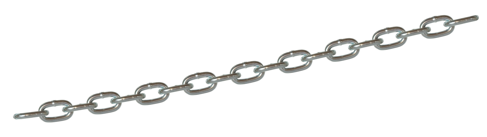

Une pile est une structure de données fondée sur le principe "dernier arrivé, premier sorti" (en anglais LIFO pour last in, first out), ce qui veut dire, qu'en général, le dernier élément, ajouté à la pile, sera le premier à en sortir pour être traité.
On ne peut accéder qu'à un et un seul élément, le dernier inséré. Autrement dit, si $p$ est une pile, on ne peut pas accéder à
Écrire une classe Pile implémentant les interfaces décrites ci-dessus.
Écrire une fonction dans la classe Pile qui renvoie la taille de la pile, i.e le nombre d'éléments.
Une file dite aussi file d'attente (en anglais queue) est une structure de données basée sur le principe du premier entré, premier sorti, désigné en anglais par l'acroynyme FIFO (« first in, first out ») : les premiers éléments ajoutés à la file seront les premiers à en être retirés.
Écrire une classe File implémentant les interfaces décrites ci-dessus.

Une liste est une structure de données permettant de regrouper des données de manière à pouvoir y accéder librement
Chaque élément contient la donnée et peut pointer, vers un ou plusieurs éléments de la liste en utilisant une définition récursive. On parle de liste chainée.
Exemple :
Écrire une classe Liste implémentant les interfaces décrites ci-dessus.